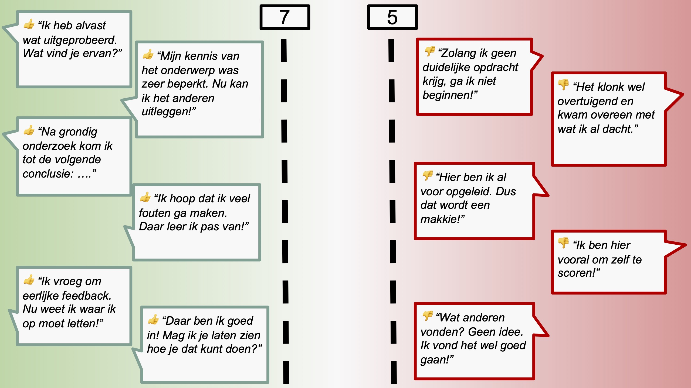

Welkom op de portfoliowebsite van Thomas van Kempen
De competenties van de Minor Smart Industry geven de algehele leidraad aan. Hieronder zal ik reflecteren op mijn ervaringen gedurende de minor en hoop ik te laten zien dat ik met behulp van mijn eigen werkwijze de minor heb behaald.
In de eerste paar weken van de minor was het voor mezelf erg zoeken naar mijn plek binnen de groep. Ik trok voornamelijk in het begin nog op met een aantal mensen die ik al kende. Dit past op zich ook nog wel in mijn karakter, maar ik wist dat ik het roer een beetje om moest gaan gooien om zo mijn leerdoelen te halen. Zo heb ik bijvoorbeeld de juiste literatuur bestudeerd om mezelf zo goed mogelijk voor te bereiden op de verschillende casussen. Ik heb ook gebruik gemaakt van mogelijkheden voor zelfreflectie en feedback, zowel van docenten als van medestudenten, om mijn sterke punten te identificeren en te werken aan mijn verbeterpunten. Door proactief samen te werken met anderen, kritisch denken toe te passen en mijn communicatieve vaardigheden te verfijnen, heb ik mijn competenties verder ontwikkeld en ben ik in staat om ze succesvol toe te passen in een professionele context. Het behalen van mijn competenties voor de minor is een resultaat van mijn toewijding, doorzettingsvermogen en een continu streven naar groei en verbetering.
Tijdens het project heb ik ook nadrukkelijk tegen mezelf gezegd dat ik meer naar de voorgrond zou moeten treden op het gebied van onderzoek doen. Daar heb ik de laatste weken enorm aan proberen te werken door middel van het voeren van gesprekken en interviews.
Ik heb verschillende kleinere leerdoelen voor mezelf opgesteld naarmate de minor volgde. Zo heb ik voornamelijk leerdoelen opgesteld die iets te maken hadden met de informatieverstrekking gedurende de minor. Denk hierbij aan het leren coderen van een website, sterker worden met het gebruik van een 3d printer en mijn vaardigheden op het gebied van communicatie en management te verbreden aan de hand van gastlectures van experts. Voor het project heb ik echter voor een andere insteek gekozen:
Tijdens het project wilde ik me voornamelijk op professionaliteit verbeteren. Ik heb hiervoor gekozen, omdat ik het gevoel heb dat dit het perfecte moment was om hierop te focussen. Je werkt immers samen in groepsverband voor een opdrachtgever met verwachtingen. Gedurende 12 weken heb ik samen met Ashley gewerkt aan een project voor Van Losser (meer lezen? Kijk dan eens bij het kopje project bovenaan de pagina.). Bij dit project hebben we een aantal uitwerkingen gemaakt. Om aan mijn leerdoel te werken, heb ik me voornamelijk bezig gehouden met het onderzoek naar veranderings- en implementatiemanagement bij een innovatie binnen Van Losser. Daarnaast heb ik gewerkt aan een dashboard. Hierbij heb ik meerdere malen de feedback verwerkt van zowel Ashley als onze opdrachtgever. Zij hebben mij geholpen met de verschillende iteraties. Ik zie dit leerdoel als een doorlopend project dat hopelijk na de vakantie weer van start gaat bij mijn stage. Tot nu toe ben ik van mening dat ik dit leerdoel goed heb afgerond.
Hoi! Mijn naam is Thomas en ik wil je heel graag welkom heten op mijn eigen gecodeerde portfoliowebsite. Ik zal me even wat beter voorstellen. Ik ben inmiddels 24 jaar oud en officieel studeer ik Communicatie & Multimedia Design aan de hogeschool van Arnhem en Nijmegen. Dit in de richting van Business Media Design. Mijn sterke punten liggen dan ook bij het onderzoek doen naar een doelgroep voor een potentieel nieuwe en flitsende campagne. Ik vind het enorm leuk om creatief beziog te zijn met de Adobe Suite, te sleutelen aan mijn eigen gebouwde PC en hier en daar iemad verslaan met een potje Fifa. Ik heb voor de Minor Smart Industry gekozen omdat ik mezelf voor wilde bereiden op technologieën die er misschien al aan komen en daarbij eventueel invloed gaan hebben op mijn dagelijkse werkzaamheden nadat ik mijn diploma heb behaald. Ik hoop dan ook veel te leren over de inzet van AI, het opkomen van 3D printen en het eigenhandig inzetten van code (om bijvoorbeeld deze hele mooie website in elkaar te zetten). Pak iets te drinken en te snacken en laat mij je leiden door de weken van de Minor Smart Industry. Hierbij zal ik mijn meest indrukwekkende belevenissen met jullie delen.